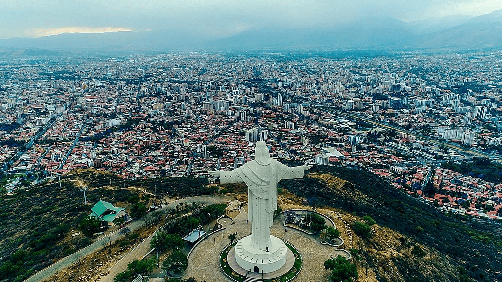

Comida típica: Fricasé paceño, plato paceño.
Danza típica: Morenada.
Historia: Fundada en 1548, sede de gobierno y capital administrativa de Bolivia.
Comida típica: Fricasé paceño, plato paceño.
Danza típica: Morenada.
Historia: Fundada en 1548, sede de gobierno y capital administrativa de Bolivia.
Comida típica: Majadito, locro de gallina.
Danza típica: Taquirari.
Historia: Fundada en 1561, región más poblada y motor económico del país.
Comida típica: Silpancho, pique macho.
Danza típica: Cueca cochabambina.
Historia: Fundada en 1571, conocida como la “ciudad jardín”.
Comida típica: Charquekan orureño.
Danza típica: Diablada.
Historia: Famosa por su carnaval declarado Patrimonio de la Humanidad por la UNESCO.
Comida típica: Kalapurka, k’ajcha.
Danza típica: Tinku.
Historia: Su Cerro Rico fue uno de los centros mineros más importantes de América.

Comida típica: Mondongo chuquisaqueño.
Danza típica: Cueca chuquisaqueña.
Historia: Sucre es la capital constitucional e histórica de Bolivia.
Comida típica: Saice tarijeño.
Danza típica: Cueca chapaca.
Historia: Reconocida por sus viñedos y tradición vitivinícola.
Comida típica: Pescado a la tacuara.
Danza típica: Macheteros.
Historia: Región amazónica rica en biodiversidad.
Comida típica: Masaco de plátano.
Danza típica: Danza de la selva.
Historia: Departamento amazónico joven, creado en 1938.